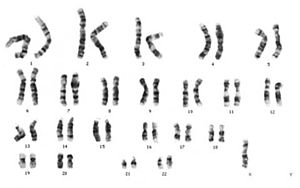
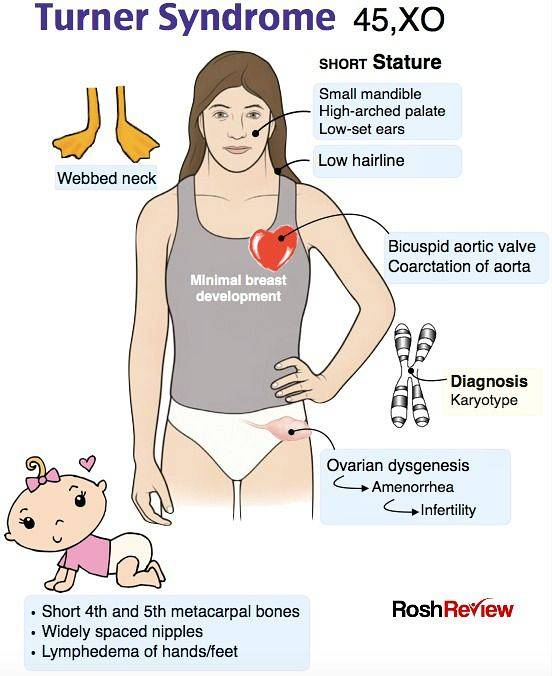
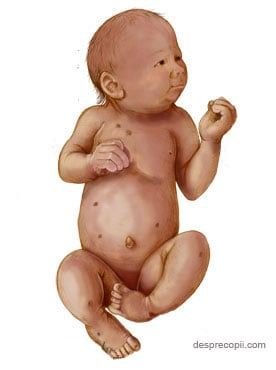
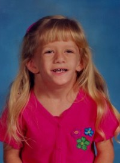

Genetica umană
Sindromul Turner
Sindromul Turner este o anomalie genetică relativ rară, ce afectează numai populația feminină și este caracterizată prin statura mică și lipsa dezvoltării caracterelor sexuale la pubertate
Cauze
Sindromul Turner este o monozomie gonozomală, caracterizată fie prin absența completă a unui cromozom X, fie prin absența regiunii terminale a brațului scurt al cromozomului X.
Majoritatea femeilor cu acest sindrom sunt cromatin-negative și au cariotip 45,X (ce uneori este scrisă și ca 45,X0). Incidența este de 2,5/10.000 de nașteri; incidența în totalul sarcinilor este considerabil mai mare, dar există o rată foarte mare de pierdere a produșilor de concepție 45,X. Aproximativ 2% din toți zigoții umani sunt 45,X, dar mai puțin de 1% din aceste sarcini ajung la termen; feții cu mozaicism genetic supraviețuiesc mai frecvent.
Urmează, în ordinea frecvenței, mozaicul 45,X /46,XX. De asemenea, au fost descrise numeroase alte anomalii cromozomice de structură (deleții ale brațelor scurte sau ale brațelor lungi ale cromozomului X, cromozom X în formă de inel, izocromozom X, etc.).
Absența unui gonozom este determinată de erori în cursul diviziunii meiotice: non-disjuncția cromozomilor sau întârzierea anafazică. Factorii care condiționează aceste erori de diviziune sunt necunoscuți. Vârsta părinților nu pare să aibă un rol.
Simptome
În perioada prenatală

Hygroma chistică este aspectul ecografic prenatal caracteristic, corespunzător unei mase chistice septate în regiunea nucală fetală. Aceasta apare, cel mai probabil, din cauza dezvoltării anormale a limfaticelor mari fetale. Alte semne ecografice majore în sindromul Turner sunt: defecte ale inimii stângi, malformații renale și ale scheletului, anasarcă sau hidrops fetal. Translucența nucală este, de obicei, crescută în trimestrul I. Severitatea problemelor diferă de la individ la individ. Pot fi prezente și alte probleme de sănătate, în special la afecțiuni ale inimii și ale sistemului renal.Multe dintre aceste probleme pot fi rezolvate sau corectate prin tratament medical.
În perioada postnatală
Copiii cu sindrom Turner au un fenotip feminin, sindromul fiind caracterizat prin talia mică, pterygium colli (plică de piele de la ceafă la creasta omoplatului), disgenezie gonadică determinată de dezvoltarea incompletă a ovarelor (ovare chistice nefuncționale), amenoree primară, malformații somatice. Dezvoltarea intelectuală este normală.
